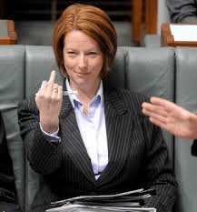
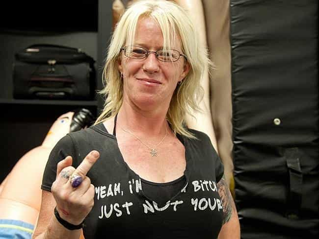
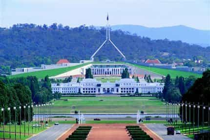
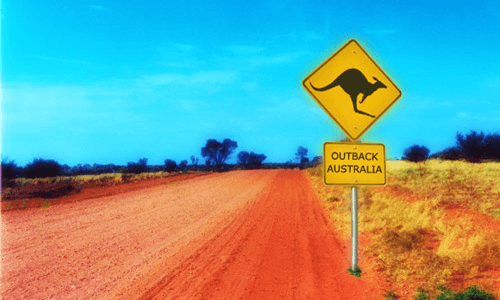
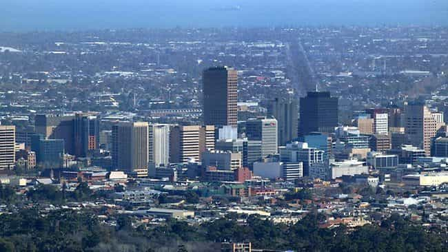

< < < Back
Why Adelaide Has The Best Women In Australia – Return Of Kings
Australia is a beautiful country that unfortunately houses some of the most entitled, masculine, and feminist women on the planet. Many grew up with the economy firing on all cylinders courtesy of a sustained mining boom, and as a result have been able to enjoy a very high standard of living their entire lives. Men in industries such as mining and agriculture are the pillar of the Australian economy, and work long hours in tough conditions in remote areas.
You would think Australian women would at least have a grudging respect for the hard masculine labour that built a strong economy enabling them to enjoy cushy government, HR, and marketing jobs. Strangely, it is trendy for the left-wing “elite” (feminists and manginas) to hate on these industries, especially mining. A culture of envy (known locally as “tall poppy syndrome”) and a rabid insistence on biting the hand that feeds you are definitely two of the most puzzling things about contemporary Australian life.
A masculine culture lost
Up until recently, Australia had a very masculine culture. Men were rugged and hardy, called a spade a spade, and enjoyed nothing more than a beer and a laugh with their mates. Unfortunately, in somewhat of a mass censorship campaign, feminists, social justice warriors, and left-leaning media and education spheres have been stunningly successful in creating a stifling atmosphere of political correctness.
Whilst this paints a bleak picture for Australian men, things have to change. After six years of the most incompetent, left-wing government in the nation’s history and with the mining boom over, Australia has run out of money. This reality is strongly denied by the lefties, but the rubber has to hit the road at some point.

Former Prime Minister Julia Gillard: a truly charming lady
In the meantime, whether you are a local or visiting Australia, you need to make the most of the situation. Overall the environment is pretty poor if you are a man with standards, but as you will see, there are diamonds in the rough if you know where to look.
If all you are interested in is a meaningless pump and dump, Australia has no shortage of sluts to cater to your depraved desires. However, this article is intended to be advice for the more discerning man.
Australian Girls 101
Most women you meet out on the town will be loud, drunk, and annoying. Anything that requires them to think should be avoided at all costs. Australian game is all about being fun and spontaneous. And always, always involve alcohol.
Aussie girls are generally very slutty, but only with a certain kind of guy. If you are over 6 foot, good-looking, and well-built, you definitely have a very big advantage and should have no trouble pulling women. They absolutely love European and South American cock, but American guys, who are perceived as arrogant, are absolutely nothing special. Of course, if you are a well-known celebrity or sportsman, that doesn’t apply.
If you are looking for a woman with lower mileage, decent values, and a thin figure, I strongly recommend somebody of relatively recent immigrant background, especially Brazilian, Italian, Polish, or Ukrainian. They are nowhere near as easy and their families will be deeply suspicious of you until you earn their trust and respect, but like most things in life, if you want to reap the rewards, you have to put in the work. Unsurprisingly, they also tend to be far more beautiful than the local “sheilas.”
Normally Australians hate immigrants, but funnily enough no man is complaining about this one
Regional guide
Australia is a huge place, with each city having its own distinct characteristics:
Sydney
Sydney girls have been well-documented. They are obsessed with money, career, and status, but have average looks at best. You’ll get plenty of models hanging out on Bondi Beach, but if you aren’t rich you won’t get a look in. Lara Bingle represents the typical Sydney “hot chick.” Looks pretty good in a bikini, nice set of tits, but the intelligence of a garden gnome and an absolutely insufferable human being—the fact she deliberately flushed her $200,000 engagement ring down the toilet should tell you all you need to know.
If you are lucky you might meet a hot tourist, but if not, you will discover that like most things in Sydney, the women are massively overpriced. Whilst Sydney has the highest gross number of hot models in Australia, the average woman is absolutely nothing special – but will refuse to settle for anything less than a tall, rich, handsome man.
Brisbane / Gold Coast

In case you were wondering, this is what a bogan looks like
The “Sunshine State” has a fantastic climate, and some claim the Gold Coast is a poosy paradise. However, if you are like me and prefer women with a modicum of class and respectability, this region will bring a tear to your eye. The Gold Coast is the undisputed home of the rough as guts “bogan.” The girls are ultra slutty, so if you like your women rude, crude, and heavily tattooed, you will be in heaven. Just remember to bag it up!
Brisbane is slightly more tolerable, but if you enjoy pleasant, feminine ladies your best option is a hot tourist. However, for every one of them is about 50 extremely thirsty guys—the trick is to get to them quickly before interacting with a local loses its novelty.
Melbourne
My hometown. Australia’s second largest city has terrible weather in winter and is no gaming wonderland, but the women are definitely better than in Sydney. A significant portion of young, good looking women are “footy chicks,” notorious for chasing AFL players. However, there are strong music, art, film, and dining scenes, and many desirable Italian girls if that is your thing. Try the Albert Park Hotel or The Emerson at South Yarra.
Canberra

This is Australia’s Washington DC. It isn’t called “The People’s Republic of Canberra” for nothing – it is left-wing groupthink central. This place is all about mind-numbing conformity. With freezing cold weather, a plague of politically-correct government workers who think their lame job makes them important, and generally mediocre women, it is best avoided.
Perth
Cottesloe: my pick for attractive girls, but the ratio can be tough
Perth is clearly home to Australia’s most masculine culture. Here you will find “real men”: tall, fit, strong, into football, surfing, and drinking. This may be due to its location in the middle of nowhere. Far away from the limp-wristed culture of the inner-city pansies of the east coast, the locals seem somewhat insulated from feminist rubbish.
For many years, Western Australia has had by far the strongest economy of any state. Many local men cut their teeth in the mines, hard work with high pay. The weather is fantastic, and there are some seriously hot women—check out the Cottesloe Beach Hotel on a warm summer weekend for evidence. The only problem is the numbers don’t stack up too favourably – most places are serious sausage fests. You are going to need some serious game to stand out with the hotties. You can still get relatively easy sex, but the quality will have you wondering whether it was worth it.
The Outback

The Outback: no sign of any feminists, but unfortunately no sign of any women period!
A true proving ground. If you can pull a hot chick here, you can pull a hot chick anywhere. In my early 20s, I briefly lived in a country town after taking a job as an engineer. Quality was a serious problem, and the ratio had to be seen to be believed – in most country towns, girls move away when they turn 18, but many men stay to work on farms or in fishing.
Expect a hostile reception from local men, who are in no mood to share their precious few resources. If you go to a pub, wearing a mouthguard is recommended. If you really are determined to pick up, you will be forced to lower your standards and be prepared to fight. That said, the men from the bush represent the last vestiges of true Australian masculinity. They couldn’t give a fuck about political correctness, and are rough around the edges, but tend to be genuine.
Adelaide

Adelaide: stuck in the 1980s and the highest unemployment rate in Australia, but for hot, accessible women look no further
“The Cemetery with Traffic Lights” is laughed at by everyone else in Australia for being a hick backwater. It is true Adelaide seems stuck in the 1980s, and is the epicenter of “can’t do” culture – where else would prime commercial land lie vacant for more than 20 years? There is a weird juxtaposition between a stubborn insistence on living in the past and a strong political leaning to the left.
Sounds like an absolute shithole, right? Wrong. I’m going to let you in on a little secret. Pound for pound, Adelaide has by far the most attractive and down to earth women in the country. Unlike other states, South Australia wasn’t settled by convicts, and this superior gene pool is evident in the beauty of the local women. Their speech is also far more pleasant. Unlike the ugly “bogan” twang of girls from other states, many of them sound British.
Not only that, but Adelaide is one of the only places Down Under that isn’t a sausage fest. Many places will have just as many girls as guys, and if you have a bit of presence, attractive girls will approach you and try and pick you up. I say with complete truth that it is far easier to get an Adelaide 8 than a Sydney 5. Honestly, I have never been to Adelaide for a weekend and failed to pick up an attractive woman. Sound like a wheelbarrow full of horseshit? Get over there and see for yourself!
Hit up places on the East side, as the north and south are downright feral. For university girls, hit up the General Havelock on a Thursday or the Edinburgh on a Tuesday in summer. If you are lucky enough to be in town on Christmas Eve, head to the Robin Hood – you will not believe the talent on offer! In such a favorable environment for men, there is certainly no need for you to dumpster dive and wade through the dregs of online dating, but nevertheless that is what the local betas seem to do.
This is another thing in your favor, because if you have the balls to approach in person you will definitely stand out. For the average guy, there is no better place in Australia to pull a hot babe. You don’t need to be rich and you don’t need to be famous. You don’t even need to trick them with elaborate game tactics. Just be cheeky and confident without teetering over into arrogance. Unlike other places in Australia, most women here are genuinely nice. I think it’s because nobody in Adelaide is that big a deal. This, along with the favorable gender ratio, seems to keep a lid on female expectations and maintain their worth for purposes other than short-term fun.
I was so impressed by Adelaide women I looked into moving there. Unfortunately, there are virtually zero options besides mind-numbing government jobs, and its high taxes make starting a business there out of the question. But what do you care about that if you are only there for a holiday?
Conclusion
In summary, if you simply want an easy root, to use the local parlance, and you are prepared to lower your standards, chances are Australian cities will meet your needs. But for the more discerning man, I would seriously consider an Adelaide woman aged 25-30, especially one of recent immigrant background.
Pay no attention to the fact that notorious misandrist Julia Gillard was born overseas and grew up in Adelaide—that is simply an anomaly. For the average man, it will be his best chance to meet a woman he can be pleased with and perhaps even be proud to introduce to his friends and family. Down Under these days, that’s no easy feat.
Read More: Why The Native Peoples In Australia Were Doomed


{kind=link}
{kind=link}